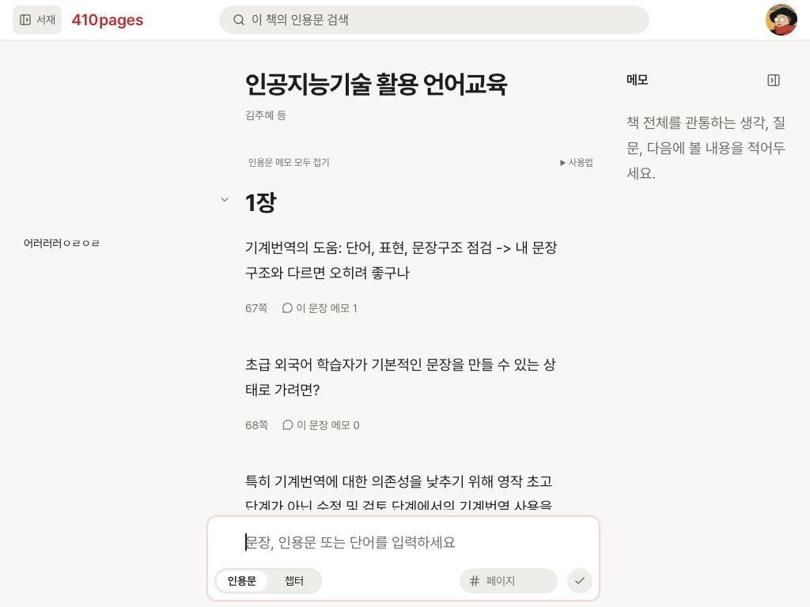
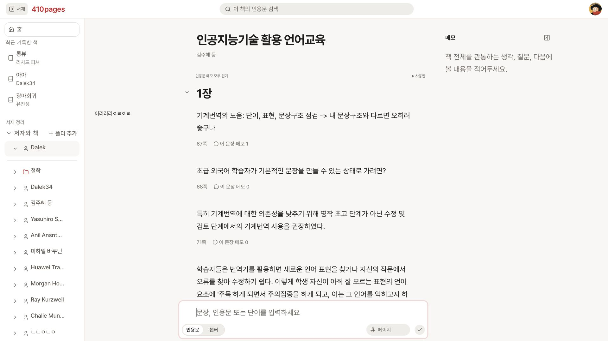
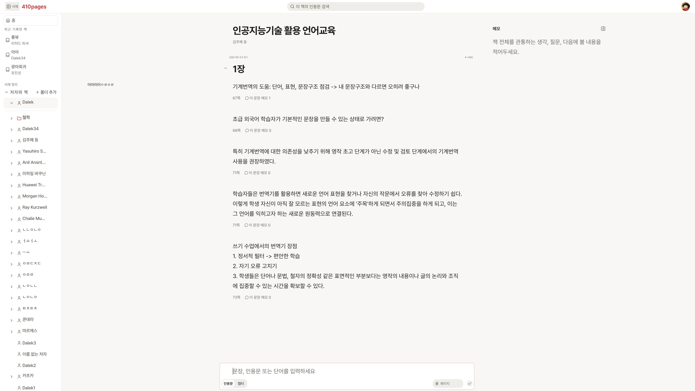
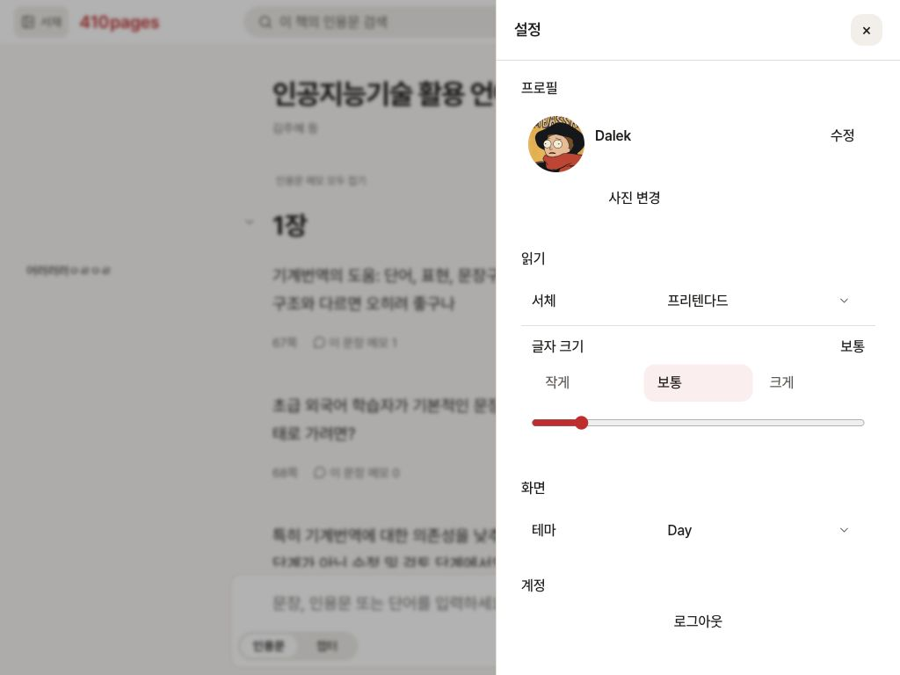

넓은 화면 구현 결과 · 1차 기록
후속 수정: 서재가 열리면 남은 공간의 중앙으로 이동하며, 서재 폭 상한은 화면의 30%로 변경했습니다. 아래 측정과 캡처는 수정 전 기록입니다. 최신 구현 결과와 실제 화면 확인
책 상세 화면의 관련 크기를 한 함수로 연결했습니다. 화면이 넓어지면 본문 폭·글자·열 간격·서재 내부가 서로 다른 속도로 커집니다.
글자 크기는 슬라이더와 작게·보통·크게 기준 버튼으로 조절하고, 인용구 너비는 화면 비율로 자동 계산합니다.
실제 책 화면에서 중앙 정렬, 서재 충돌, 입력창 높이, 읽던 위치와 드래그 동작을 확인했습니다.
실제 화면에서 측정한 값
사용자의 기존 글자 설정 14pt를 유지한 결과입니다. 단위는 CSS px이며, 보이는 글 영역을 측정했습니다.
| 화면 | 댓글 / 본문 / 메모 폭 | 본문 글자 | 본문 중심 | 글 영역 사이 간격 |
|---|---|---|---|---|
| 1024 × 768 | 202 / 404 / 202 | 18.67 | 512 | 78 / 78 |
| 1920 × 1080 | 215.20 / 679.05 / 339.52 | 22.91 | 959.98 | 106.63 / 106.63 |
| 3840 × 2160 | 634.22 / 1268.44 / 634.22 | 32 | 1919.99 | 168 / 168 |
1920에서는 서재가 댓글에 닿아 댓글만 좁아졌습니다. 서재를 접으면 댓글이 기본 폭으로 복원되고 본문·메모의 폭과 위치는 유지됩니다. 3840에서는 서재를 접고 펼쳐도 댓글의 폭·위치가 같았습니다.
사용자 결정 반영
- 1024 이상은 데스크톱이며, 제목·본문·입력창의 글 영역은 같은 중앙과 시작선을 사용합니다.
- 기본 글 영역 비율은 1:2:1입니다. 서재 충돌 시에는 댓글만 좁히는 관계가 우선합니다.
- 서재도 글자·아이콘·행 높이·폭이 커집니다. 닿기 전에는 댓글을 밀지 않습니다.
- 글자 크기를 바꿔도 본문 폭은 바뀌지 않습니다. 인용구 너비 조절 칸은 제거했습니다.
- 메모는 자연스러운 상단에서 시작하고, 접기 버튼은 메모 헤더 오른쪽 끝에 유지합니다.
- 챕터 화살표는 입력칸 왼쪽 바깥, 모드 버튼과 같은 높이입니다. 인용문 모드에서는 숨기며 폭 변화의 200ms 애니메이션을 유지합니다.
Codex 구현 판단
- 공통 계산 함수는 역할별 글자·조작 크기·여백·들여쓰기·열 폭을 반환합니다. 미사용 고정 폭 계산 함수와 그 이전 기준 검사는 새 계산으로 대체했습니다.
- 빠른 글자 기준은 12 / 14 / 18pt입니다. 전체 10~40pt 범위와 기존 중간값은 유지하며, 서버 저장만 300ms로 묶습니다.
- 댓글이 보조 글자 약 8개 폭보다 좁아지면 기존 서재 자동 접기를 적용합니다. 좁은 화면에서 수동으로 열면 본문 위에 표시하고, Escape로 닫으면 서재 버튼으로 초점이 돌아옵니다.
- 서재 개폐 중에도 본문 중앙을 유지하기 위해 책 화면의 서재 폭은 즉시 반영하고 투명도만 전환합니다.
- 메모의 고정된 시작선을 유지하면서 드래그를 자연스럽게 하기 위해 폭 조절 손잡이를 메모 오른쪽 끝에 둡니다. 기존 다른 화면의 오른쪽 패널 조절 방향은 유지합니다.
- 입력창의 높이 측정과 공통 배율 계산을 분리했습니다. 글자·폭 변경 뒤 입력 높이를 다시 측정하고 DOM·초안·커서를 유지합니다.
실제 조작 확인
| 첫 글자 | 빈 입력칸과 한 글자 입력 후 모두 박스 107px / textarea 45px / 글 영역 404px였습니다. 테스트 글자는 지웠으며 새 인용문을 저장하지 않았습니다. |
|---|---|
| 챕터 단계 | 한 단계 안으로 이동할 때 글 영역이 404 → 372px, 시작선이 310 → 342px로 바뀌었습니다. 위로 이동해 원래 폭을 복원했습니다. |
| 읽던 위치 | 1024 → 1920 변경 후 같은 인용문 ID가 유지됐고, 스크롤 영역 안의 위치 차이는 약 0.20px였습니다. 최상단에서는 제목이 가려지지 않도록 0을 유지합니다. |
| 서재 겹쳐 열기 | 1024에서 서재가 화면 아래를 넘지 않았습니다. 가려진 본문은 키보드 접근을 막고, 닫은 뒤 본문과 초점을 복원했습니다. |
| 메모 폭 | 손잡이를 왼쪽으로 16px 드래그하면 실제 오른쪽 경계도 16px 줄었습니다. 반대로 드래그해 원본 저장값 360과 표시폭 216px로 복원했습니다. |
검증 범위와 남은 확인
전체 84개 파일·589개 테스트가 통과했습니다. 마지막 조정 범위 24개 검사와 타입 검사도 통과했고 프로덕션 빌드를 확인했습니다. 변경된 UI의 자동 디자인 검사도 문제를 보고하지 않았습니다.
기존 메모 자동저장·실패 복구, 사용자 설정 저장 범위, 기존 맞춤 글자 값, 모바일 흐름을 유지합니다.
검증 화면은 Codex 인앱 브라우저의 CSS viewport입니다. 물리 모니터별 표시 배율·읽는 거리의 체감은 확인하지 않았습니다. 인앱 브라우저의 확대 단축키로는 실제 배율 변경을 확인할 수 없어 200% 브라우저 확대는 미검증입니다. 글자 선택·저장 경로는 테스트의 서버 모형으로 확인했고 실제 사용자 글자 설정은 변경하지 않았습니다.
실제 앱 캡처
1024 기준 실제 책 화면

1920 실제 책 화면

3840 실제 책 화면

새 읽기 설정

기존 로컬 서버와 실제 책 탭은 검토용으로 유지했습니다. 검사·빌드 프로세스는 종료됐고, 이번에 별도 브라우저 탭이나 개발 서버를 추가하지 않았습니다.